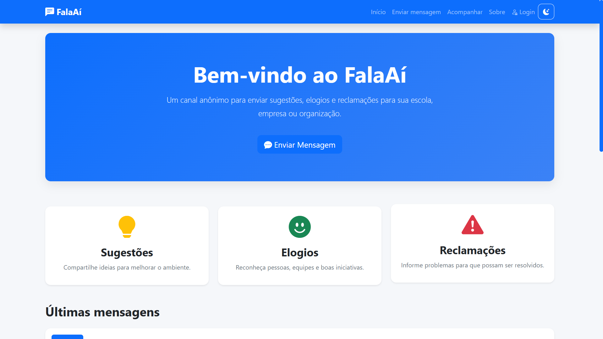

PROJETOS APRESENTADOS
PORTFÓLIO DE DESENVOLVIMENTO
DESENVOLVEDOR WEB.
Transformando ideias em experiências digitais. Estudo programação e desenvolvimento de sistemas para criar soluções úteis, funcionais e bem construídas.
DESENVOLVEDOR EM FORMAÇÃO
Wildy Matheus Severiano Lima
Wildy Matheus Severiano Lima
TECNOLOGIAS EM ESTUDO
VONTADE DE EVOLUIR
IDEIAS PARA DESENVOLVER
TRABALHOS SELECIONADOS
Projetos em destaque.

01 / DESENVOLVIMENTO WEB
Site de cafeteria
Uma experiência digital para apresentar uma cafeteria e seus produtos.

02 / SISTEMA WEB
Feedback anônimo
Sistema para registrar opiniões e sugestões, facilitando a comunicação.

03 / Site jornalistico
Bola na Rede
Meu espaço profissional para apresentar projetos, habilidades e evolução.
O QUE ESTOU DESENVOLVENDO
Habilidades.
DESENVOLVIMENTO WEB
Criação e estruturação de páginas e interfaces.
LÓGICA DE PROGRAMAÇÃO
Construção de soluções para resolver problemas.
BANCO DE DADOS
Consultas e organização de informações com SQL.
INTERFACES RESPONSIVAS
Layouts adaptados a diferentes tamanhos de tela.
FERRAMENTAS E TECNOLOGIAS
Meu conjunto de ferramentas.
5HTML
#CSS
JSJavaScript
PyPython
DBSQL
{ }JSON
APRENDENDO, PRATICANDO E EVOLUINDO
SOBRE MIM
Curiosidade que vira criação.
Sou estudante de Desenvolvimento de Sistemas e vejo a tecnologia como uma forma de transformar ideias em soluções reais.
Gosto de entender como as coisas funcionam, investigar problemas e encontrar maneiras de resolvê-los. Para mim, desenvolver vai além de escrever código: envolve raciocínio lógico, criatividade, atenção aos detalhes e disposição para aprender.
Estou construindo minha trajetória na área por meio de estudos e projetos práticos, buscando evoluir continuamente e me preparar para os desafios do mercado de tecnologia.
Minha direção
Crescer como profissional, colaborar com boas equipes e desenvolver soluções que façam a diferença.
DA IDEIA À IMPLEMENTAÇÃO
Meu processo de desenvolvimento.
ENTENDER
Compreender o problema e o objetivo do projeto.
PLANEJAR
Organizar as ideias e definir uma solução.
DESENVOLVER
Transformar o planejamento em código.
TESTAR
Verificar o funcionamento e corrigir problemas.
EVOLUIR
Aprender com o resultado e aprimorar o projeto.
Estou construindo minha carreira em tecnologia e aberto a conversas sobre desenvolvimento, projetos e oportunidades.
GITHUB
github.com/maatheusZK ↗LOCALIZAÇÃO
Natal, Rio Grande do Norte, BrasilTELEFONE
+55 (84) 98151-4411